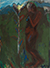

모두가 웃는 웹 'web for all' 본사이트는 서울시립미술관 커미션으로 제작한 정혜윤의 작업입니다.
모두가 웃는 웹(web for all)
-
송매희 맨드라미 2
작품 정보
- 제작연도
- 1988
- 재료/기법
- 오일 페이퍼에 에그 템페라
- 작품규격
- 102×74cm
- 액자규격
- 118×91cm
- 부문
- 회화
- 관리번호
- 2001-63
- 전시상태
- 전시중
작가 및 작품설명
송매희(1952- )는 중앙대학교 예술대학 회화과, 원광대학교 사범대학 미술교육과, 독일 브라운슈바이크 국립 조형예술대학(Hochschule fur Kunste Bremen), 동 대학 마이스터슐러((Meisterschueler) 과정을 졸업하였다. 1990년 바탕골미술관(서울), 1996년 모인화랑(서울), 가톨릭갤러리(광주), 2001년 갤러리이브(서울), 2004년 갤러리창(서울), 2009년 《아름다운 땅, 바람》(샘터갤러리, 서울) 등의 개인전을 열었다. 1985년 《브라운슈바이크 국립조형예술 대학기획전》(브라운슈바이크 국립조형예술대학교, 브라운슈바이크, 독일), 1991년 《서울, 베를린 91》(조선일보미술관, 서울), 1992년 《여류화가회》(한가람미술관, 서울), 2001년 《1980년대 리얼리즘과 그 시대》(가나아트센터, 서울), 2010년 《매혹적 교감》(갤러리 이즈, 서울) 등의 단체전에 참여했다.
송매희는 꽃, 지평선, 하늘 등 자연을 소재로 삼아 자신의 내면을 투영하는 작업을 보여준다. 1980년대 독일 유학시절 작업한 작품들에는 혼란한 시대상에 대한 현실인식과 더불어 고향에 대한 그리움이 묻어난다. 자연을 형상화함에 있어 거친 붓질, 강력한 색채의 사용 등 그녀의 작품에 나타나는 표현주의적 경향은 어두운 현실에 대한 고뇌, 외로움이 발현된 것으로 보인다. 이 시기 그녀의 작품 속에는 배경과 형태가 생략되어 나타나지만 특유의 무게감 있는 색채와 조형감각으로 개인의 실존에 대한 진지한 성찰을 엿볼 수 있다. 고국을 상징하는 ‘꽃’이라는 소재를 사용하여 어두운 현실을 반영하였던 그녀의 작품들은 현실에 대한 비판을 낭만적인 기법으로 소화한 구성방식으로 평가받는다. 그녀의 작품세계는 형상들을 점차 단순화, 명료화하는 과정으로 진행되는데, 대상을 그려내는 빛과 색은 여전히 그녀의 존재를 인식시키는 역할을 하고 있다. 근작에서는 원형의 기하학적 무늬를 사용하여 바람의 이미지를 꽃이라는 이름으로 시각화해 보여주며 아름다움을 섬세한 감성으로 전달하고 있다.
송매희는 독일 유학시절 고향을 생각하면 늘 떠오르던 ‘맨드라미’를 ‘고향’과 ‘자신의 실존’에 빗대어 자주 그렸다. 작가의 자작시에도 등장하는 맨드라미는 아픔과 희망의 정서를 동시에 담고 있는 것으로, 한국사회의 어두운 현실에 대한 안타까움, 고향을 향한 그리움이라는 내면적 감성과 새로운 희망 등의 다의적인 의미를 함께 내포한다. 맨드라미는 잡초와 같이 뿌리 채 뽑혀 버려지지만 이내 스스로 희망의 생명을 틔어내는 강인한 존재인 것이다. 1988년에 제작한 두 점의 <맨드라미 1> 시리즈는 공통적으로 대담한 터치와 생략, 어두운 색채가 화면을 지배한다. 낭만적이고 표현적인 방식은 타국에서 느낀 고독과 그리움의 정서를 잘 드러낸다. 꽃과 여성의 육체는 미술사 속에서 순수, 미, 지성과 같은 기성의 가치들을 대변하기 위해 주로 사용되었지만, 송매희는 이에 대한 관습적인 규범을 과감하게 깨트린다. 작품에서 맨드라미와 여성은 비현실적인 색채를 입은 채 생동감이 없는 모습으로 땅을 딛고 서있다. 전반적으로 두 작품을 동일하게 관통하는 이 같은 배경 속에 <맨드라미 1>에 그려진 꽃 한 송이는 역경 속에서 피어난 절절한 생명력을, <맨드라미 2>의 고요히 고개를 돌려 정면을 응시하고 있는 여성은 당대를 살아가는 여성들의 몸과 정신에 가해지던 억압을 암시한다. * 작품이미지를 무단 복제 또는 상업적으로 활용하실 수 없으며, 무단으로 사용하실 경우 저작권법에 따라 처벌 받으실 수 있습니다.공지사항
-
- 제목
- LOADING
- -
오시는길
-
- 서소문본관
- 서울 중구 덕수궁길 61 (서소문동)
-
- 북서울미술관
- 서울 노원구 동일로 1238 (중계동)
-
- 남서울미술관
- 서울 관악구 남부순환로 2076 (남현동)
-
- 난지미술창작스튜디오
- 서울 마포구 하늘공원로 108-1 (상암동)
-
- SeMA창고
- 서울 은평구 통일로 684 (서울혁신파크 5동)
-
- 백남준기념관
- 서울 종로구 종로53길 12-1 (창신동)
-
- SeMA벙커
- 서울 영등포구 여의대로 지하 76 (여의도동)